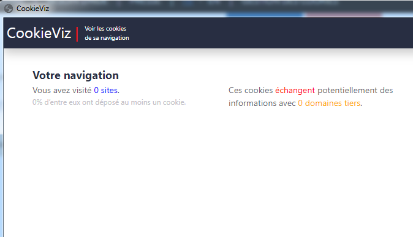
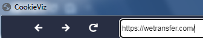
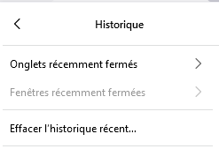
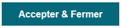
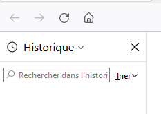
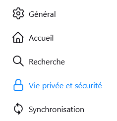
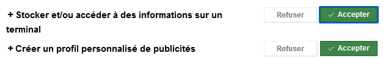

C'est quoi un cookie ?
Un cookie, c'est un petit fichier texte que le site web dépose sur ton navigateur quand tu le visites. Il sert à retenir des informations : ta session de connexion, tes préférences, ou même à suivre ta navigation entre plusieurs sites.
Il y a deux grandes catégories : les cookies techniques (nécessaires au fonctionnement du site) et les cookies de traçage (pour la pub et les statistiques). Ces derniers, tu as le droit de les refuser.
L'historique du navigateur
Le navigateur stocke aussi l'historique de navigation, les fichiers en cache et les données de formulaires. Ça peut vite s'accumuler. Pour consulter l'historique sur Firefox, Ctrl+H ou le menu Historique.


Gérer les cookies dans Chrome
Dans Chrome, tu peux voir et supprimer les cookies site par site. Va dans Paramètres → Confidentialité et sécurité → Cookies et données des sites. Tu peux aussi bloquer les cookies tiers directement depuis là.


La CNIL et le consentement
La CNIL (Commission Nationale de l'Informatique et des Libertés) impose que les sites demandent ton accord avant de déposer des cookies non essentiels. C'est le fameux bandeau en bas de page. Tu as le droit de tout refuser d'un seul clic, depuis la réforme 2021.


Protection contre le pistage
Firefox intègre une protection renforcée contre le pistage. Elle bloque automatiquement les trackers connus, les cookies de pistage intersites, les scripts de fingerprinting. On peut voir ce qui est bloqué sur chaque page en cliquant sur le bouclier dans la barre d'adresse.
